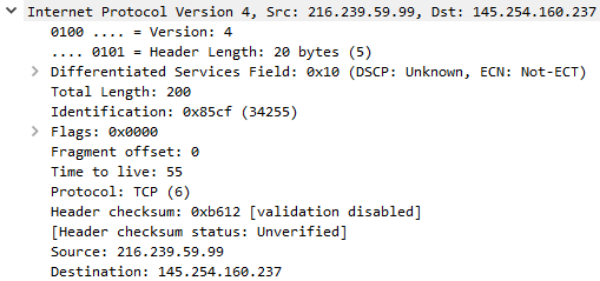

Wireshark
Wireshark, a tool used for creating and analyzing PCAPs (network packet capture files), is commonly used as one of the best packet analysis tools.
External (Capture Filter)
https://wiki.wireshark.org/CaptureFilters
Collection Methods Overview
Some things to think about before going headfirst into attempting to collect and monitor live packet captures.
Begin by starting with a sample capture to ensure that everything is correctly set up and you are successfully capturing traffic.
Ensure that you have enough compute power to handle the number of packets based on the size of the network, this will obviously vary network by network.
Ensure enough disk space to store all of the packet captures.
Once you meet all these criteria and have a collection method picked out you can begin to actively monitor and collect packets on a network.
Network Taps
Network taps are a physical implant in which you physically tap between a cable, these techniques are commonly used by Threat Hunting/DFIR teams and red teams in an engagement to sniff and capture packets.
There are two primary means of tapping a wire. The first is by using hardware to tap the wire and intercept the traffic as it comes across, an example of this would be a vampire tap as pictured below.
Another option for planting a network tap would be an inline network tap, which you would plant between or 'inline' two network devices. The tap will replicate packets as they pass the tap. An example of this tap would be the very common Throwing Star LAN Tap
MAC Floods
MAC Floods are a tactic commonly used by red teams as a way of actively sniffing packets. MAC Flooding is intended to stress the switch and fill the CAM table. Once the CAM table is filled the switch will no longer accept new MAC addresses and so in order to keep the network alive, the switch will send out packets to all ports of the switch.
Note: This technique should be used with extreme caution and with explicit prior consent.
ARP Poisoning
ARP Poisoning is another technique used by red teams to actively sniff packets. By ARP Poisoning you can redirect the traffic from the host(s) to the machine you're monitoring from. This technique will not stress network equipment like MAC Flooding however should still be used with caution and only if other techniques like network taps are unavailable.
Filtering Captures (Display Filter)
Packet Filtering is a very important part of packet analysis especially when you have a very large number of packet sometimes even 100,000 plus. In task 3 capture filters were briefly covered however there is a second type of filter that is often thought of as more powerful and easier to use. This second method is known as display filters, you can apply display filters in two ways: through the analyze tab and at the filter bar at the top of the packet capture.
Display Filter Documentation: https://www.wireshark.org/docs/wsug_html_chunked/ChWorkBuildDisplayFilterSection.html
Filtering Operators
Wireshark's filter syntax can be simple to understand making it easy to get a hold of quickly. To get the most out of these filters you need to have a basic understanding of boolean and logic operators.
Wireshark only has a few that you will need to be familiar with:
• and - operator: and / &&
• or - operator: or / ||
• equals - operator: eq / ==
• not equal - operator: ne / !=
• greater than - operator: gt / >
• less than - operator: lt / <
Wireshark also has a few other operators that go beyond the power of normal logical operators. These operators are the contains, matches, and bitwise_and operators. These operators can be very useful when you have a large capture and need to pinpoint a single packet. They are out of scope for this room however I recommend doing your own research, the Wireshark Filtering Documentation can be a great starting point.
Basic Filtering
Filtering gives us a very large scope of what we can do with the packets, because of this there can be a lot of different filtering syntax options. We will only be covering the very basics in this room such as filtering by IP, protocol, etc.
There is a general syntax to the filter commands however they can be a little silly at times. The basic syntax of Wireshark filters is some kind of service or protocol like ip or tcp, followed by a dot then whatever is being filtered for example an address, MAC, SRC, protocol, etc.
Filtering by IP: The first filter we will look at is ip.addr, this filter will allow you to comb through the traffic and only see packets with a specific IP address contained in those packets, whether it be from the source or destination.
Syntax: ip.addr == <IP Address>
This filter can be handy in practical applications, say when you are threat hunting, and have identified a potentially suspicious host with other tools, you can use Wireshark to further analyze the packets coming from that device.
Filtering by SRC and DST: The second filter will look at is two in one as well as a filter operator: ip.src and ip.dst. These filters allow us to filter the traffic by the source and destination from which the traffic is coming from.
Syntax: ip.src == <SRC IP Address> and ip.dst == <DST IP Address>
Similar to the first filter we can see that Wireshark is combing through the packets and filtering based on the source and destination we set.
Filtering by TCP Protocols: The last filter that we will be covering is the protocol filter, this allows you to set a port or protocol to filter by and can be handy when trying to keep track of an unusual protocol or port being used.
It is worthwhile to mention that Wireshark can filter by both port numbers as well as protocol names.
Syntax: tcp.port eq <Port #> or <Protocol Name>
Filtering by UDP Protocols: You can also filter by UDP ports by changing the prefix from tcp to udp
Syntax: udp.port eq <Port #> or <Protocol Name>
Example For ARP Packet Filtering
Filter:
arp -- Shows all ARP Packets
arp.opcode==1 -- Shows only ARP Requests
arp.opcode==2 -- Shows only ARP Reply
Note:
TCP can give useful insight into a network when analyzing however it can also be hard to analyze due to the number of packets it sends. This is where you may need to use other tools like RSA NetWitness and NetworkMiner to filter out and further analyze the captures.
Packet Disection
This section covers how Wireshark uses OSI layers to break down packets and how to use these layers for analysis. It is expected that you already have background knowledge of what the OSI model is and how it works.
OSI Model
Packet Details
You can double click on a packet in capture to open its details. Packets consist of 5 to 7 layers based on the OSI model. We will go over all of them in an HTTP packet from a sample capture.
Looking above we can see 7 distinct layers to the packet: frame/packet, source [MAC], source [IP], protocol, protocol errors, application protocol, and application data. Below we will go over the layers in more detail.
◇ Frame (Layer 1) -- This will show you what frame / packet you are looking at as well as details specific to the Physical layer of the OSI model.
◇ Source [MAC] (Layer 2) -- This will show you the source and destination MAC Addresses; from the Data Link layer of the OSI model.
◇ Source [IP] (Layer 3) -- This will show you the source and destination IPv4 Addresses; from the Network layer of the OSI model.

◇ Protocol (Layer 4) -- This will show you details of the protocol used (UDP/TCP) along with source and destination ports; from the Transport layer of the OSI model.
◇ Protocol Errors -- This is a continuation of the 4th layer showing specific segments from TCP that needed to be reassembled.
◇ Application Protocol (Layer 5) -- This will show details specific to the protocol being used such HTTP, FTP, SMB, etc. From the Application layer of the OSI model.
◇ Application Data -- This is an extension of layer 5 that can show the application-specific data.
Wireshark Features (HTTP Traffic)
Used for HTTP
Note:
A very useful feature in Wireshark to organize the protocols present in a capture the Protocol Hierarchy. Navigate to Statistics > Protocol Hierarchy.
Note:
The next feature in Wireshark we will look at is the Export HTTP Object. This feature will allow us to organize all requested URIs in the capture. To use Export HTTP Object navigate to file > Export Objects > HTTP.
Note:
The last feature we will cover in this section of this room is Endpoints. This feature allows the user to organize all endpoints and IPs found within a specific capture. Just like the other features, this can be useful to identify where a discrepancy is originating from. To use the Endpoints feature navigate to Statistics > Endpoints.
Wireshark HTTPS Traffic
HTTPS Traffic Overview
Before sending encrypted information the client and server need to agree upon various steps in order to make a secure tunnel.
Client and server agree on a protocol version
Client and server select a cryptographic algorithm
The client and server can authenticate to each other; this step is optional
Creates a secure tunnel with a public key
Note:
You can use an RSA key in Wireshark in order to view the data unencrypted. In order to load an RSA key navigate to Edit > Preferences > Protocols > TLS > [+] . If you are using an older version of Wireshark then this will be SSL instead of TLS. You will need to fill in the various sections on the menu with the following preferences:
IP Address: 127.0.0.1
Port: start_tls
Protocol: http
Keyfile: RSA key location
Now that we have an RSA key imported into Wireshark, if we go back to the packet capture we can see that the data stream is now unencrypted (HTTP).